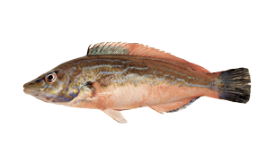

Explore Fishingin Kerry
A fishing journey of a lifetime awaits along 179km of coastal road on the Ring of Kerry
Welcome to Fishing Kerry
A county of exceptional beauty. The coastal areas of Kerry provide the perfect habitat for a wide range of fish with endless options.
Deep Sea Angling
Irish deep sea fishing is one of the most sought after experiences for an angler in Ireland. For a professional or an amateur angler, there is a wide range of charter boats available for deep sea fishing. One of the most popular deep sea fishing locations in Ireland on a charter boat is Dingle, located in County Kerry.
Discover Ireland
Ireland has over 70,000 km of river channels and over 12,000 lakes. And with such a mild climate it’s easy to understand why it’s an excellent location for fishing.
The list below is some of the most caught and popular fish species anglers catch in Ireland. Note for some of these fish species you may require a license. To learn more, visit rules and regulations which will explain in detail what is required for each fish species.
- Cod
- Thornback Ray
- Sea Bass
- Salmon
- Trout
- Pike
Common Fish Species
“Spawning of northeastern Atlantic cod occurs between January and April (March and April are the peak months), at a depth of 200 metres (660 ft) in specific spawning grounds at water temperatures between 4 and 6 °C (39 and 43 °F). Cod reach maturity at about 50 cm (20 in) at about 3 to 4 years of age.”
Cod
“Pollock can grow to 105 centimetres (3 feet 5 1⁄2 inches) and can weigh up to 21 kilograms (46 pounds). It can be found in water up to 180 metres (600 feet; 100 fathoms) deep over rocks and anywhere in the water column. Pollock is a whitefish.”
Pollock
“Flounders ambush their prey, feeding at soft muddy areas of the sea bottom, near bridge piles, docks and coral reefs. Flounder typically grow to a length of 22–60 centimeters (8.7–23.6 in), and as large as 95 centimeters (37 in). Their width is about half their length.”

Flounder
“Adult fish can grow to 1 metre (3.3 ft) in length, although most are less than 85 centimetres (33 in). This ray can weigh from 4.5 to 8.75 lb (2 to 4 kg). Their colours vary from light brown to grey with darker blotches and numerous small darker spots and yellow patches.”
Thornback Ray
“It can grow to 65.9 cm (25.9 in) in total length (though most do not exceed 50 cm (20 in) standard length), and the greatest recorded weight of this species is 4.4 kg (9.7 lb).”

Ballan Wrasse
“Mackerel are strong swimmers. Atlantic mackerel can swim at a sustained speed of 0.98 m/sec with a burst speed of 5.5 m/sec, while chub mackerel can swim at a sustained speed of 0.92 m/sec with a burst speed of 2.25 m/sec.”
Mackerel
“Males mature at around 11 years of age, growing to 80–100 cm (31–39 in) in length; females mature in 18–21 years and are slightly larger than males, reaching 98.5–159 cm (38.8–62.6 in).[7] Both sexes are greyish brown in color and are countershaded.”
Dogfish
“This species can be found in the eastern Atlantic and also in the Mediterranean and Black Sea at 0–500 m of depth, although they may reach depths of 3600 m during their migrations. It is usually present on rough, rocky, broken ground, close to the coast when young, moving to deeper waters when adult.”
Conger Eel
“Atlantic salmon are the largest species in their genus, Salmo. After two years at sea, the fish average 71 to 76 cm (28 to 30 in) in length and 3.6 to 5.4 kg (7.9 to 11.9 lb) in weight.[6] But specimens that spend four or more winters feeding at sea can be much larger. ”
Atlantic Salmon
“Their average length is 60 cm, but they can grow up to 130 cm in length and weigh up to 20 kg under favourable habitat conditions. Their most striking feature is the long, elongated, torpedo-shaped body. Like all trout species the sea trout has an adipose fin. Sea trout feed mainly on fish, small crabs, shrimps and prawns.”
Sea Trout
“It is generally found among rocks or algae at a depth of 20–60 m (66–197 ft). Growing up to 1.6 m (5.2 ft) long, the nursehound has a robust body with a broad, rounded head and two dorsal fins placed far back. ”

Bullhus
“European bass are a very slow-growing species that takes several years to reach full adulthood. An adult European seabass usually weighs around 11 pounds. European bass can reach sizes of up to 1 m (3.3 ft) in length and 12 kg (26 lb) in weight, though the most common size is only about half of that at 0.5 m (1.6 ft).”
Sea Bass
“It has dark gray back that transit into silver white toward the belly with several grey horizontal stripes. Its maximum length is around 60 centimetres (24 in) and weight around 1.5 kilograms (3.3 lb), but commonly it is much smaller fish with average specimen having 30 centimetres (12 in) in length.”
Golden Grey Mullet
“The turbot is a large left eyed flatfish found primarily close to shore in sandy shallow waters throughout the Mediterranean, the Baltic Sea, the Black Sea and the North Atlantic. The European turbot has an asymmetrical disk-shaped body, and has been known to grow up to 1 metre (39 inches) long and 55 pounds (25 kilograms) in weight”
Turbot
“European plaice are characterised by their smooth brown skin, with distinctive red spots and a bony ridge behind the eyes. They can be found at depths of up to 200 metres. At night they move into shallow waters to feed and during the day they bury themselves in the sand. Their maximum recorded length is 100 cm (39.4 inches).”
Plaice
“This fish can reach a maximum length of about 70 centimetres (27 1⁄2 inches). The colour may be yellowish-brown, greenish or dark blue, the flanks yellowish grey or white and the belly silvery. There is a distinctive black blotch near the base of each pectoral fin.”
Whiting
Locations
Most popular locations to fish in Kerry. Each location has specific species of fish that are common to that area.
Click on each location to see it on the map.

{kind=link}
{kind=link}
{kind=link}
{kind=link}
{kind=link}
{kind=link}
{kind=link}
{kind=link}
{kind=link}
{kind=link}
{kind=link}